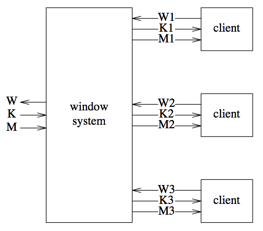

Concurrent programming with Go
"Using the websocket package, [...] was able to add the web viewer on his train ride home."
"We wrote [...] in two or three beers."
What is Go?
- Started at Google by Ken Thompson, Rob Pike, ...
- Design philosophy: less is more
- Attractive model to write concurrent programs
- Originally focused on system projects: databases, networking servers
- Has become a general purpose language
- Makes programming sensible and fun!
Why Go?
Concurrency!
- Writing multi-threaded programs is hard
- Too much emphasis on low-level details: locks, mutexes, ...
- Asynchronous event callbacks are just a crippled API, where your code run single-threaded :(
CSP
-
In 1978, Tony Hoare introduced the theory of "Communicating Sequential Processes"
Input, output, and concurrency should be regarded as primitives of programming
Composition of communicating sequential processes is a fundamental program structuring method.
- Occam and Erlang are two well-known languages that stem from CSP
Goroutines
- Goroutines are functions and methods executing concurrently in the same address space
- It is practical to create hundreds of thousands of goroutines (each cost a few KB initially)
- Goroutines are multiplexed onto a set of system threads
- When a goroutine blocks, such as in a system call, the Go runtime automatically moves other goroutines to a spare thread
Channels
- Goroutines communicate via channels
- Channel is the way of synchronization: the sender and receiver both unblocks at the rendezvous moment to exchange a datum
Concurrency primitives demo
func main() {
c := make(chan string)
d := make(chan string)
go func() {
for {
c <- "msg" // sending blocks until there is a receiver
}
}()
go func() {
for {
d <- ("relayed " + <-c) // process received value, then send it out
}
}()
for {
select {
case val := <-c:
println(val)
case val := <-d:
println(val)
}
}
}
Select
select {
case x = <-c:
// x was received from c
case d <- y:
// y was sent to d
default:
// non-blocking case
}
- Every case must be a communication
- If any communication can proceed, it does; others are ignored
- If multiple cases are ready, one is selected to proceed at random, fairly
- If there is no default case, the select statement blocks until one case can proceed
The Go Way
Do not communicate by sharing memory.
Instead, share memory by communicating.
- Shared values should be passed around on channels
- Channel (or set of channels) defines a protocol of interaction with a given resource
- E.g. Rob Pike built a concurrent window system represented by 3 channels: graphics, keyboard, mouse. The window system can run recursively on itself to implement a multi-window text editors
A concurrent windows system
A TCP echo server
spawns multiple goroutines and also does informative logging :)
import ("net"; "io"; "os"; "log") func die(err os.Error) { if err != nil { log.Fatal(err) } } func main() { server, err := net.Listen("tcp", "127.0.0.1:3640"); die(err) for { conn, err := server.Accept(); die(err) go func() { defer conn.Close() n, err := io.Copy(conn, conn) log.Printf("echoed %d byte to %s\n", n, conn.RemoteAddr()) if err != nil { log.Printf("error: %s", err) } }() } }Sequential goroutine but non-blocking I/O
epoll/kqueueare kernel optimizations to deal with accepting ten thousands of connections (the C10K problem)- Many languages implement these system calls as libraries and expose to client a crippled callback API, leading to inefficient single-threaded spaghetti code
- Go networking code use
epoll/kqueueunder the hood: server with goroutines can handle 10K concurrent clients
Go is a lot more than concurrency
- Duck typing: feels like Python
- Segmented stack: stack overflow not possible
- Static compilation, single binary deployment
- Call C/C++ code
- Run on bare hardware without OS
- Tools: IDEs, goroutine-aware debugger, profiler, code formatter
- Standard libraries: zip, jpeg, json, mime/multipart, utf8, websocket, ...
- Package management:
goinstall github.com/user/project
A few bits of history
- 1978, C. A. R. Hoare, "Communicating Sequential Processes," Communications of the ACM 21(8)
- 1983, Occam, the first CSP language, runs on dedicated Transputer chip
- 1985 – 1995, Rob Pike & Ken Thompson worked on the Plan 9 OS (Unix's supposed successor) and several CSP-based languages
- 1998, Erlang open-source release
- 2006, Erlang gained support for SMP scheduling
- 2009, Go went nuts!
- July 2010, an implementation of
selectwas prototyped for the Stackless Python module in PyPy
Where to go from here?
- The official Go language tutorial
- Go codewalks
- golang-nuts — the official mailing list
- #go-nuts — IRC channel on freenode.org
Thank you! Questions?
For more information about our company, visit Skunkworks.vn. We are hiring!